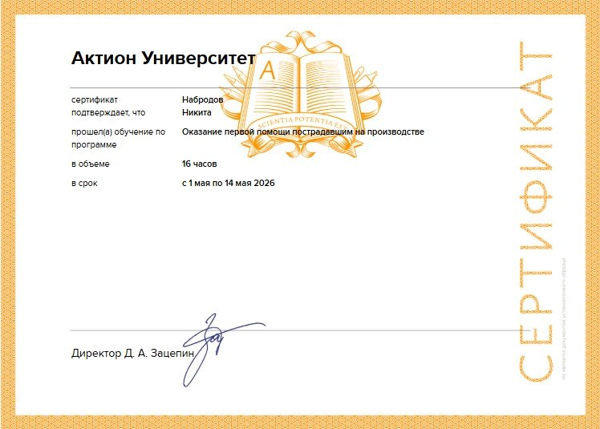
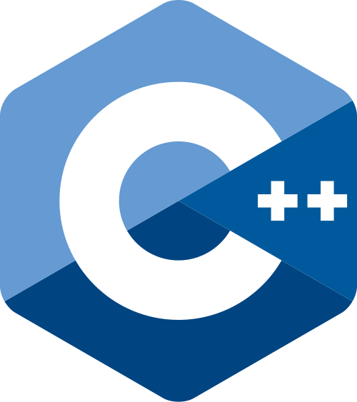
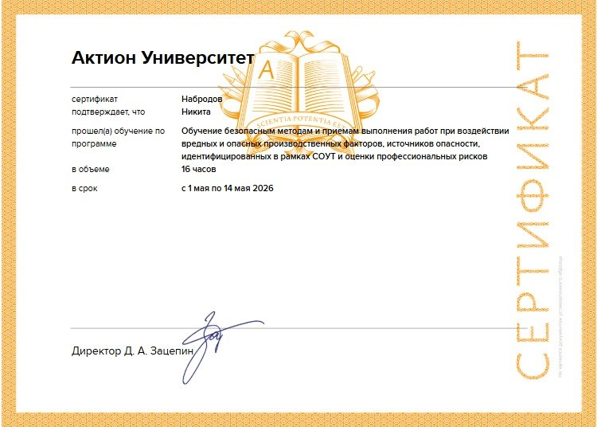
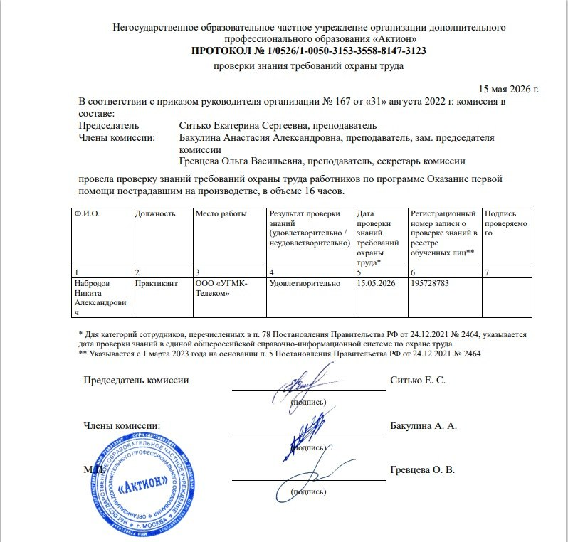
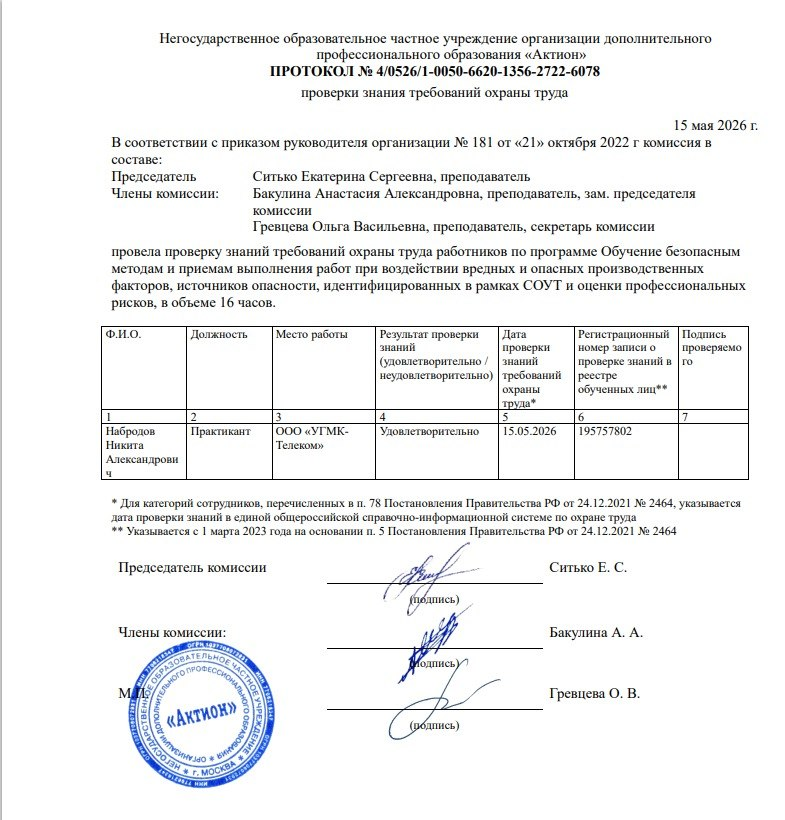

Сертификат обучения по оказанию первой помощи пострадавшим на производстве
Министерство образования Свердловской области
Набродов Никита Александрович
ГАПОУ СО "Екатеринбургский колледж транспортного строительства"
Специальность:
09.02.07 "Информационные системы и программирование"
Группа: ПР-42
Я - студент группы ПР-42, обучаюсь на специальноть 09.02.07 "Информационные системы и программирование", в образовательном учреждении ГАПОУ СО "ЕКТС"
Моя цель - построить карьеру в IT-сфере и стать востребованным специалистом
C++

C#

Kotlin
HTML

CSS

JavaScript

PHP

SQL
Перечень общих (ОК), профессиональных (ПК) и дополнительных профессиональных (ДПК) компетенций по специальности 09.02.07 "Информационные системы и программирование":

Сертификат обучения по оказанию первой помощи пострадавшим на производстве

Сертификат обучения по безопасным методам и приемам выполнения работ при воздействии вредных и опасных производственных факторов

Документ подтверждающий обучение по оказанию первой помощи пострадавшим на производстве

Документ подтверждающий обучение по безопасным методам и приемам выполнения работ при воздействии вредных и опасных производственных факторов
Посещал открытые лекции и мастер-классы по информационной безопасности и цифровой грамотности